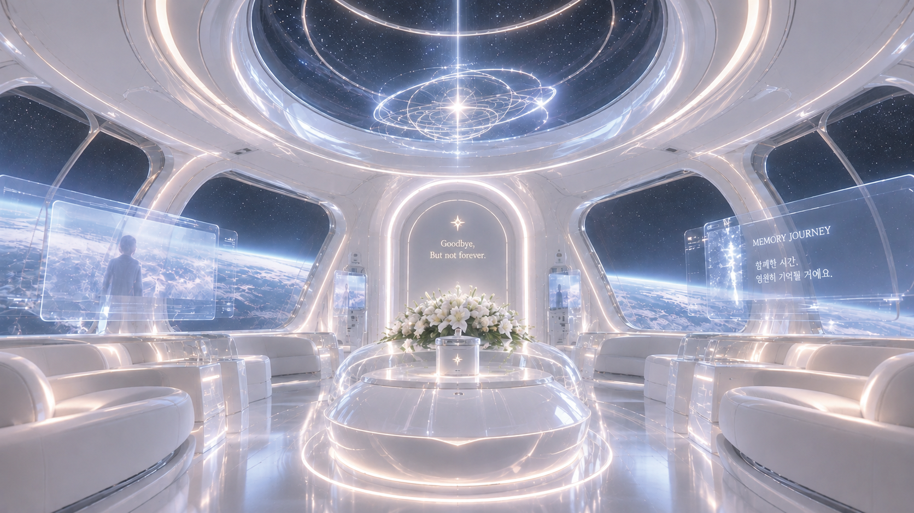
01 / Departure
운구 로켓
지구에서 우주 납골당으로 이어지는 마지막 이동 공간.
DESIGN INTENT
USER JOURNEY · 이동과 이별의 시작고인의 마지막 여정에 유가족이 함께 참여하도록 계획한다.
A Place Where Memories Become Stars
초고령화에 따른 장례 수요 증가와 지상 장례시설의 수용 한계를 프로젝트의 출발점으로 설정했다.
가용 부지의 한계와 신규 건립을 둘러싼 사회적 갈등.
시설 입지를 둘러싼 지역 갈등과 도시 공간 단절에 대한 문제 인식.
기존 매장과 화장 과정의 환경 부담에 대한 문제 인식.
우주 정거장 형태의 납골당을 제안하여 지상 토지 부담을 줄이고, 기억을 보존하는 새로운 장례문화를 구상한다.
대상: 고인과의 연결을 이어가고 싶은 유족, 새로운 장례문화를 원하는 미래 세대, 무연고 사망자 및 공공 추모 대상.
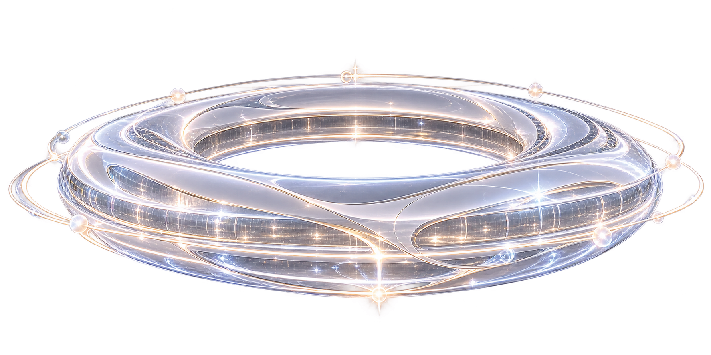
미래형 설계 제안이며 우주 운송 및 운영의 실현 가능성과 환경 효과는 별도 검증이 필요하다.
서로 다른 공간에 존재하더라도 기억과 사랑으로 연결되는 관계를 우주에 담아낸다.
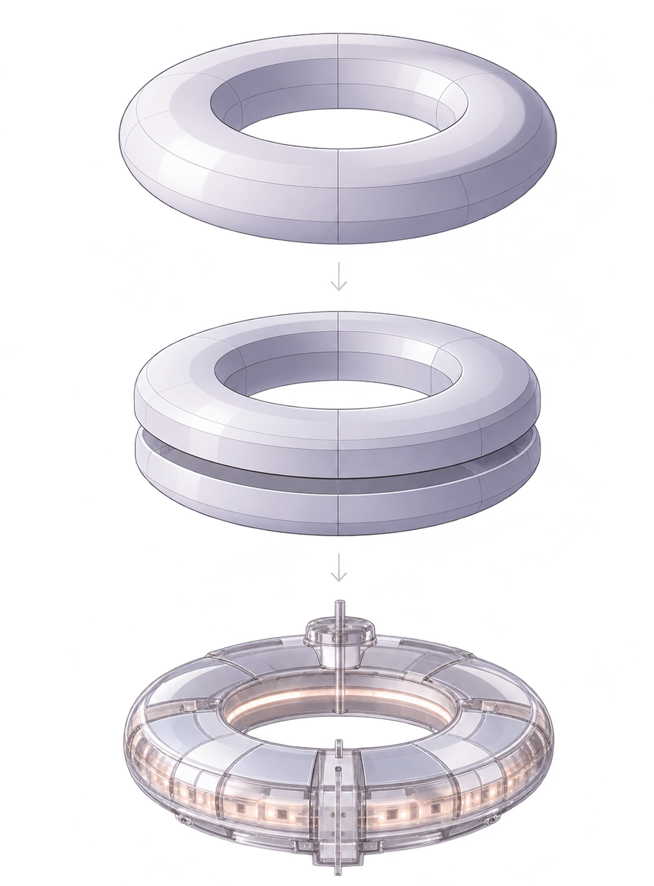
원형 링을 기본 매스로 설정한다.
상하로 분리하고 확장하여 입체적인 공간을 확보한다.
추모 프로그램을 배치하여 공간을 구체화한다.
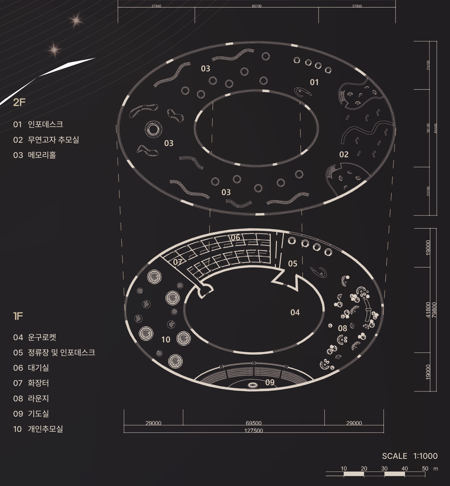
운구로켓, 정류장 및 인포데스크, 대기실, 화장터, 라운지, 기도실, 개인추모실.
인포데스크, 무연고자 추모실, 메모리홀.
도면을 클릭하면 고해상도 원본 영역을 열 수 있다.
운구로켓
정류장 및 안내
화장터 및 대기실
메모리홀
개인추모실
라운지

지구에서 우주 납골당으로 이어지는 마지막 이동 공간.
고인의 마지막 여정에 유가족이 함께 참여하도록 계획한다.
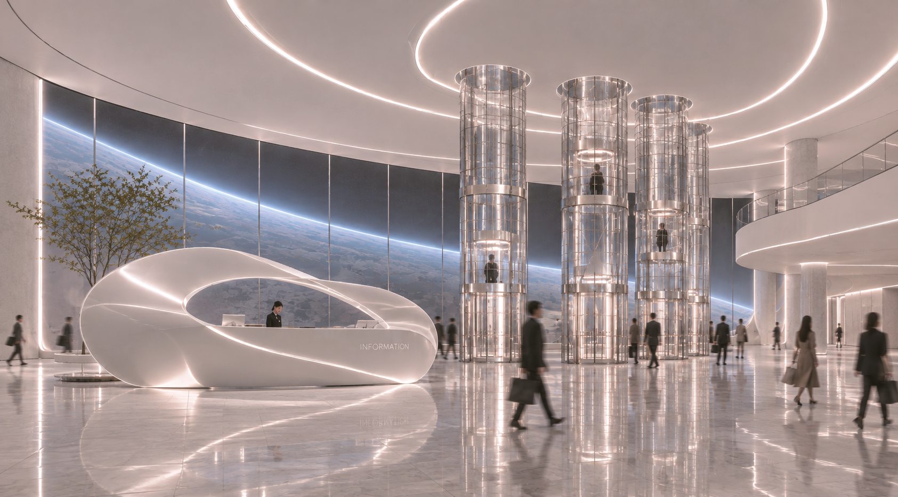
도착한 방문객에게 목적지와 이동 정보를 제공하는 공간.
AI 안내와 수직 이동을 연결해 각 추모 공간으로 안내한다.
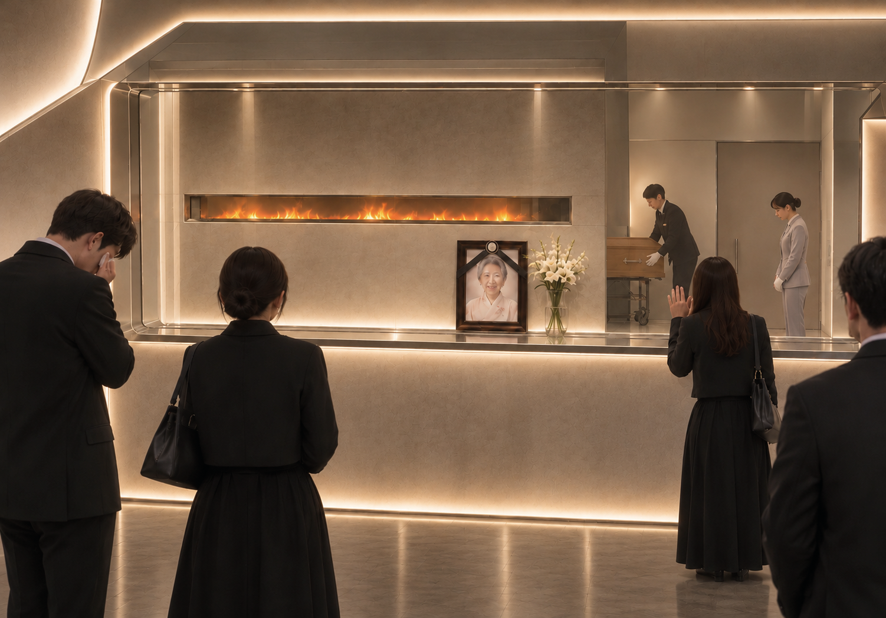
고인의 마지막 절차를 진행하는 공간.
자동화 설비를 제안하고 경건하고 차분한 분위기를 조성한다.
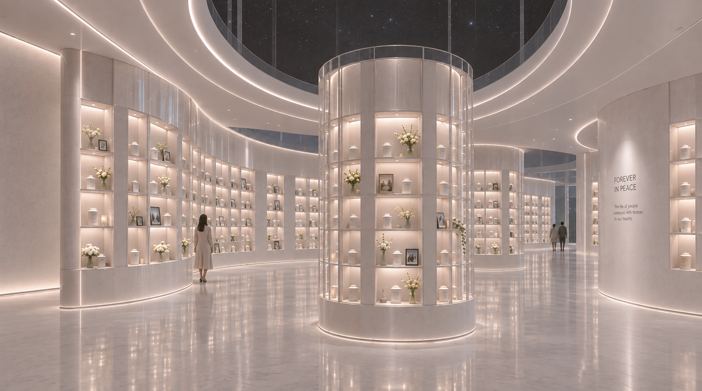
유품과 생전 기록을 보존하는 개인화된 추모 공간.
사진과 기록을 디지털 콘텐츠로 제공하여 개인적인 기억을 되새기도록 한다.
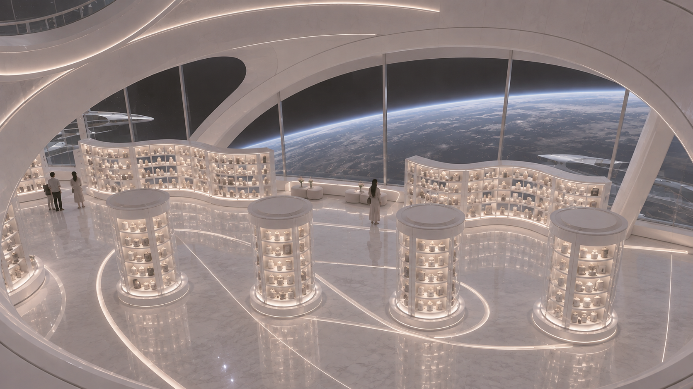
자유로운 추모와 우주 경관 감상이 가능한 공간.
반복적인 원형 구조로 개인의 기억과 공동의 추모를 연결한다.
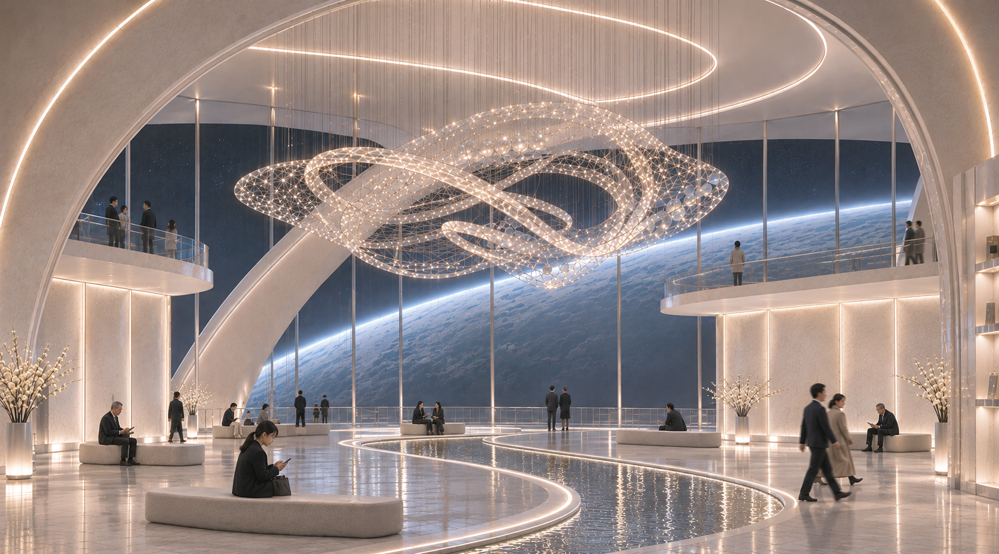
연고 없이 세상을 떠난 이들을 기억하는 공공 추모 공간.
따뜻한 빛과 차분한 분위기로 누구나 존엄하게 기억될 수 있도록 한다.
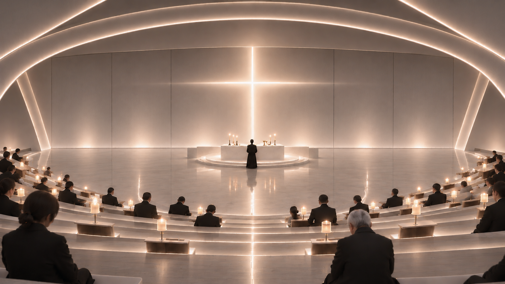
종교와 관계없이 함께 추모하고 기도하는 공간.
계단식 좌석과 중앙 추모 공간으로 공동의 의식과 연대감을 형성한다.
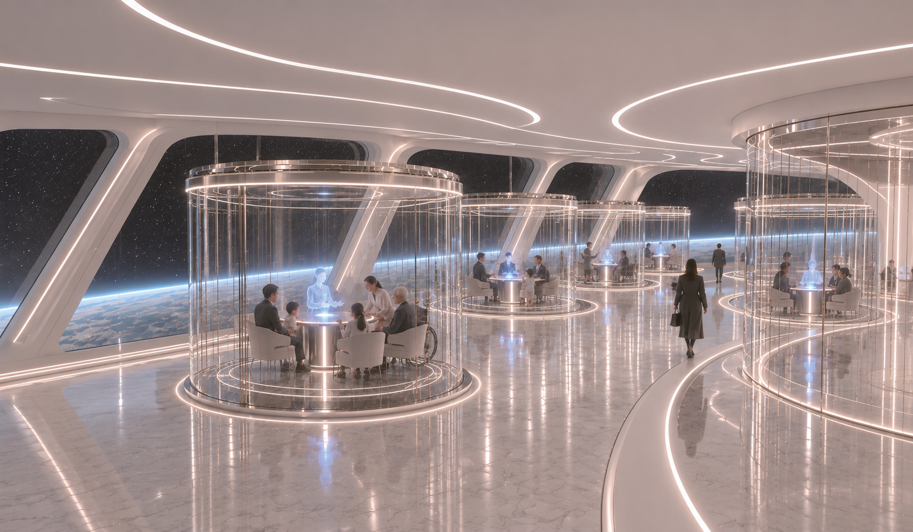
고인의 생전 기록을 개인적으로 살펴보는 추모 공간.
AI 음성·영상 및 개인화된 디지털 콘텐츠를 활용하는 경험을 제안한다.
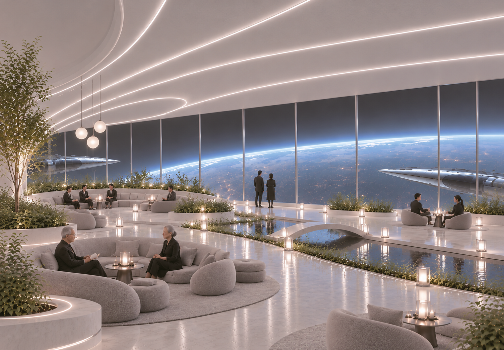
지구와 우주를 바라보며 휴식하는 개방형 공간.
자연 요소와 우주 경관을 통해 추모 이후 사색과 휴식을 지원한다.
아래 기술은 실제 구축 결과가 아닌 설계 단계의 적용 제안이다.
지상의 장례시설 부지를 사람과 자연을 위한 공간으로 환원하고, 우주를 기억과 추모의 새로운 터전으로 확장하는 미래상을 제안한다.
← Back to selected works